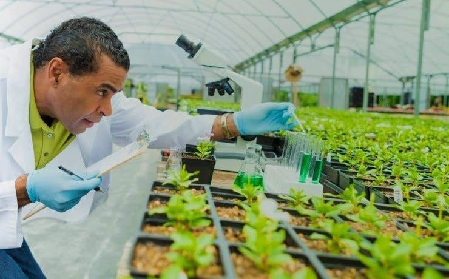

Biotechnology in agriculture uses advanced techniques to improve crop yields, pest resistance, and sustainability, enabling more efficient food production while reducing environmental impact.
Biotechnology in agriculture uses advanced techniques to improve crop yields, pest resistance, and sustainability, enabling more efficient food production while reducing environmental impact.
Biotechnology in Agriculture refers to the application of scientific and technological advancements in biology to improve the quality, quantity, and sustainability of agricultural products. By using biotechnology, scientists can develop new ways to improve crop yields, protect plants from diseases, and enhance nutritional content, which is crucial for addressing food security and sustainability in agriculture.
Genetically engineered crops that are resistant to pests, diseases, and harsh environmental conditions, increasing yield and reducing dependency on chemical pesticides.
Developing plants and animals that are resistant to specific diseases, minimizing the use of harmful chemicals and reducing crop loss.
Genetic modification can improve the nutritional profile of crops, providing greater health benefits, such as rice enriched with vitamin A (Golden Rice) to combat malnutrition.
Biotech innovations contribute to sustainable farming practices by improving water efficiency, reducing the need for fertilizers, and minimizing environmental impact through precision agriculture.
Genetic modifications can make crops grow faster and produce more per acre, which is critical for feeding the growing global population.